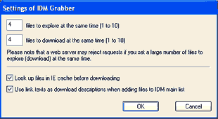

Settings Dialog

On the Grabber settings dialog you can specify how many files to explore and how many files to download at the same time.
If a link to a found file has any text, then the description containing the text will be added to the description field and be shown when you add the file to the main IDM list.
By default "Look up files in IE cache before downloading" box is checked. If the grabber finds a file in IE cache, it checks if the file was changed. If the file was changed, the grabber downloads it from the site. If not, the grabber takes it from the cache of IE. If you don't use Internet Explorer, you may turn this option off.